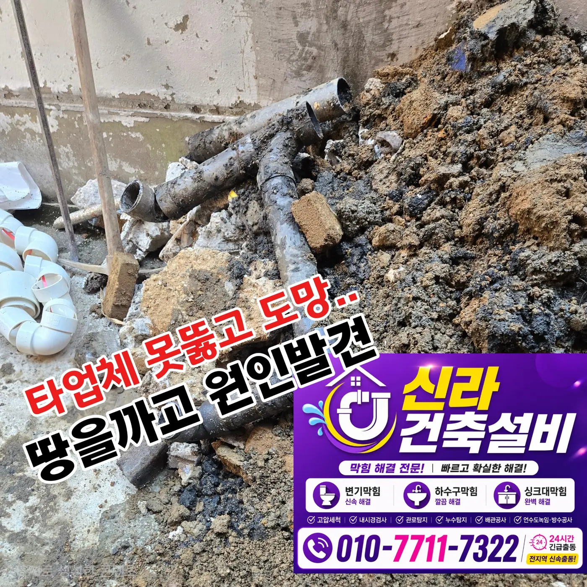

서초구 서초동 변기막힘, 변기 탈거 후 마라탕 음식물 제거
서초구 효령로 변기막힘 현장에서 변기를 탈거한 결과 하부 배관에 걸린 마라탕 재료를 발견해 집게와 에어건으로 모두 제거했습니다.
서울 · 서초구 · 변기막힘
서초구에서 실제로 해결한 변기막힘 사례를 바탕으로 변기뚫는업체를 찾을 때 확인할 증상과 작업 방법을 정리했습니다. 물이 천천히 내려가거나 수위가 차오르는 막힘, 물이 안 내려가는 증상, 이물질 막힘, 반복 막힘, 변기 역류 등은 원인이 서로 다를 수 있어 현장 진단 후 필요한 범위를 안내합니다.
물이 천천히 내려가거나 수위가 차오르는 막힘, 물이 안 내려가는 증상, 이물질 막힘, 반복 막힘, 변기 역류처럼 비슷해 보이는 증상도 원인 구간은 다를 수 있습니다. 신라건축설비는 실제 출동 기록을 기준으로 증상·원인·사용 장비·작업 결과를 공개합니다.
주요 점검·작업: 석션·에어건·내시경 점검·변기 탈거와 오수관 확인
변기막힘·변기뚫는업체 전체 서비스와 지역별 사례 보기 →서초구 효령로 변기막힘 현장에서 변기를 탈거한 결과 하부 배관에 걸린 마라탕 재료를 발견해 집게와 에어건으로 모두 제거했습니다.

관통기 작업으로 해결되지 않았던 서초구 양재동 변기막힘 현장에서 석션 작업을 진행해 변기 내부에 걸려 있던 칫솔을 안전하게 제거했습니다.

관통기와 석션 작업으로 해결되지 않았던 서초동 변기막힘 현장에서 변기를 탈거한 뒤 내부 이물질과 오수관 초입부의 잔존 이물질까지 제거했습니다.

변기 내부로 빗이 들어감 물이 천천히 내려가는 상태

한 번 막힘을 제거한 뒤에도 같은 증상이 반복된다는 상담을 받고, 변기와 연결 배관의 반응을 순서대로 확인했습니다.